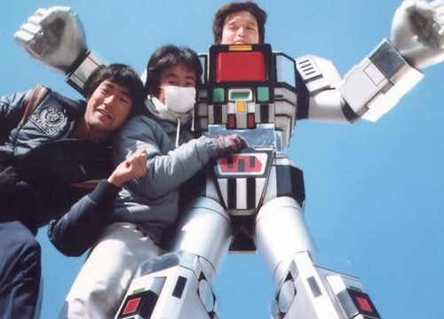
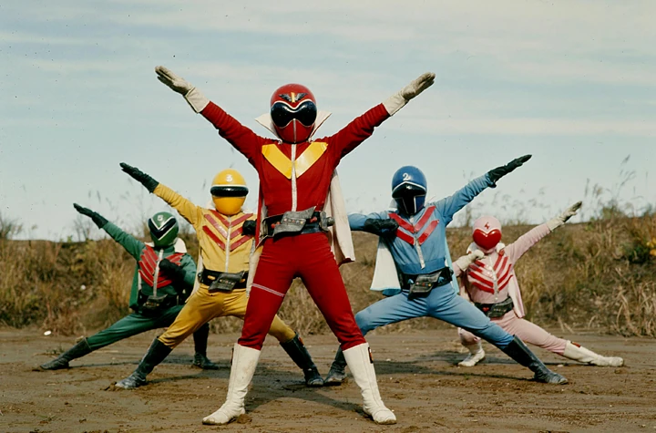

O que é tokusatsu?
Tokusatsu (特撮) é um termo japonês para séries e filmes de ação que fazem uso de efeitos visuais e pirotécnicos. Afinal, trata-se da abreviação de “tokushu kouka satsuei” (特殊効果撮影). Portanto, o significado de tokusatsu é “filmes de efeitos especiais”.
Contudo, apesar de ser uma palavra japonesa, nos dias de hoje, há outras produções de tokusatsu feitas em diversos outros países, inclusive no Brasil. O tokusatsu é dividido em vários gêneros, resumimos abaixo os principais.
Super Sentai
Super Sentai são as séries protagonizadas por esquadrões coloridos que combatem organizações do mal que querem dominar o planeta Terra. A franquia Super Sentai foi criada pela Toei em 1975 como uma forma de variar as produções da época.
Nesse período, os tokusatsus — os seriados de heróis contra monstros gigantes — ainda seguiam uma fórmula bem inspirada em Ultraman e até Kamen Rider, com um herói solitário tendo que salvar o mundo dessas criaturas. Foi então que a ideia dos esquadrões veio à tona. A ideia era justamente esta: trazer uma equipe de heróis bem diferentes e coloridos para fazer aquilo que apenas um único personagem fazia. Era uma forma de criar algo diferente, visualmente impactante para atrair as crianças e com muito potencial para gerar diferentes brinquedos.
Metal Hero
Metal Heroes são séries estreladas por heróis que vestem trajes metálicos para lutar contra vilões que variam desde monstros do espaço a criminosos, no mundo dos super-heróis do tokusatsu, os efeitos especiais japoneses, o personagem número um para os fãs brasileiros é O Fantástico Jaspion, que chegou ao Brasil em 1988 junto com o Esquadrão Relâmpago Changeman. O sucesso sem precedentes de Jaspion fez as emissoras brasileiras trazerem os heróis similares a ele que o antecederam e também seus sucessores diretos na TV japonesa, todos produzidos pela Toei Company.
m uma área que hoje é dominada por grandes marcas, como Ultraman, Kamen Rider e Super Sentai, a franquia mais querida do público brasileiro atende pelo nome de Metal Hero, que abriga Jaspion, Jiraiya, Sharivan, Winspector e outros. Mas, tal franquia não existe de fato, sendo uma denominação informal que teve origem no meio dos fãs japoneses e acabou sendo aceita pela produtora. No jargão da cultura pop, ou da cultura nerd/geek/otaku, a própria palavra "franquia" se popularizou bastante nos últimos anos, mas poucos sabem sua origem e significado.
Kaiju
A palavra se traduz, literalmente, por “besta estranha”. Pode ser tanto uma criatura de ficção científica como de fantasia; pode ser tanto um protagonista, quanto um antagonista ou simplesmente uma força da natureza. A dificuldade em se classificar o gênero de forma mais específica se dá principalmente pelo fato de que não existem descrições tradicionais desse tipo de coisa na cultura japonesa. Foi somente com o próprio Godzilla de Ishiro Honda, em 1954, que se pode dizer que monstros gigantes se tornaram objeto de interesse da cultura pop local.
Como tudo na existência dos japoneses após 1945, isso se deve principalmente ao encerramento da Segunda Guerra, e a influência americana posterior. Não é preciso ser um grande estudioso para saber que existem dois Japão: um pré e um pós-guerra. E foi exatamente por influência do estilo hollywoodiano de cinema que os japoneses desenvolveram e expandiram ainda mais um subgênero do cinema japonês – o tokusatsu, o gênero japonês dos efeitos especiais. Daí para os kaiju eiga, os filmes de monstros gigantes, foi um passo.
Incidentalmente, sobre essa relação entre americanos, japoneses e monstros, existe uma curiosidade que aproxima ainda mais esses mundos – embora, como dito, Godzilla seja considerado o primeiro kaiju, ele não foi de fato o primeiro kaiju no cinema, e nem o primeiro kaiju a assolar o Japão. Esse mérito vai para King Kong, que estreou nas telonas em 33, e se tornou tão popular na terra do Sol Nascente que ganhou uma versão local – mas não absolutamente legal – em 38 chamada Edo ni Arawareta Kingu Kongu, ou King Kong Aparece em Edo. O filme é tão bom que hoje é considerado perdido mas essa é outra história.
Considerações Finais
A história é muito rica em detalhes e cheias de nuances, vale ressaltar que é uma baita experiência cinematográfica e fica a recomendação de tudo que foi escrito até o momento desde já agradeço o seu tempo e lhe desejo tudo de bom nesta jornada que chamamos de vida!